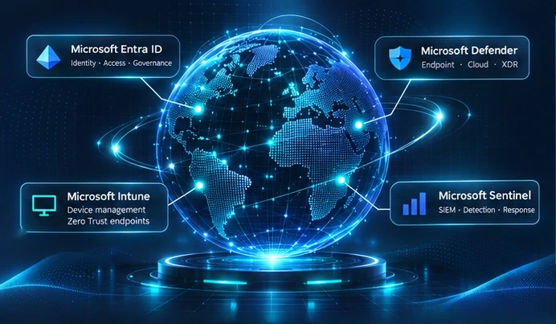

Microsoft Intune
Endpoint management, enrollment and device configuration.
BUILD · DETECT · INVESTIGATE · IMPROVE
Microsoft Security · Blue Team · Practical Labs
I document hands-on Microsoft security work with a simple rule: show what I did, what I verified and what still needs testing. Explore my completed investigations and ongoing Windows endpoint lab.
✓ Evidence-led case studies · No inflated claims

MY TECHNICAL FOCUS · MICROSOFT SECURITY
Endpoint management, enrollment and device configuration.
Identity, device trust and access management.
Endpoint protection and threat investigation as a learning focus.
Planned detection engineering and KQL practice.
THE WORK · THE EVIDENCE · THE LIMITS
A curated selection of documented work and future projects. Each case separates hands-on results from proposed controls.
Browse all projectsA guided OSINT investigation into image metadata, public-source correlation and information disclosure risk.
A physical Windows 11 Autopilot lab investigating Microsoft Entra join, user sign-in and Intune management.
A proposed learning track for identity security, KQL and Microsoft Sentinel detection validation. No completed lab is claimed.
HOW I APPROACH PRACTICAL LABS
A professional case study should make it easy to distinguish configuration, observed behaviour and validated outcomes.